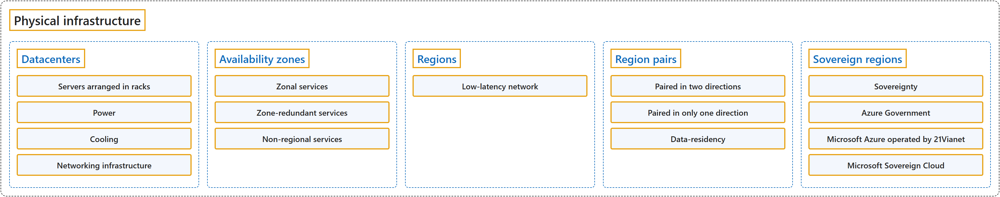

2.1 Physical Infrastructure
Classification

Glossary
| Term | Definition | 中文解释 | Source |
|---|---|---|---|
| Physical infrastructure 物理基础结构 |
"This unit covers the physical side — how Azure organizes its datacenters, regions, and availability zones to deliver reliable services worldwide." | 本单元介绍物理层面：Azure 如何组织其数据中心、区域和可用区，以在全球提供可靠的服务。 | Microsoft, n.d.-b, unit introduction, para. 1 |
| Datacenters 数据中心 |
"These datacenters are facilities with servers arranged in racks, with dedicated power, cooling, and networking infrastructure — similar to an on-premises datacenter, but at a much larger scale." | 这些数据中心是放置成排机架服务器的设施，配有专用的供电、冷却和网络基础结构，类似于本地数据中心，但规模大得多。 | Microsoft, n.d.-b, "Physical infrastructure" section, para. 1 |
| Servers arranged in racks 成排机架服务器 |
(context) "These datacenters are facilities with servers arranged in racks, with dedicated power, cooling, and networking infrastructure — similar to an on-premises datacenter, but at a much larger scale." | （语境）这些数据中心是放置成排机架服务器的设施，配有专用的供电、冷却和网络基础结构，类似于本地数据中心，但规模大得多。 | Microsoft, n.d.-b, "Physical infrastructure" section, para. 1 |
| Power 供电 |
(context) "These datacenters are facilities with servers arranged in racks, with dedicated power, cooling, and networking infrastructure — similar to an on-premises datacenter, but at a much larger scale." | （语境）这些数据中心是放置成排机架服务器的设施，配有专用的供电、冷却和网络基础结构，类似于本地数据中心，但规模大得多。 | Microsoft, n.d.-b, "Physical infrastructure" section, para. 1 |
| Cooling 冷却 |
(context) "These datacenters are facilities with servers arranged in racks, with dedicated power, cooling, and networking infrastructure — similar to an on-premises datacenter, but at a much larger scale." | （语境）这些数据中心是放置成排机架服务器的设施，配有专用的供电、冷却和网络基础结构，类似于本地数据中心，但规模大得多。 | Microsoft, n.d.-b, "Physical infrastructure" section, para. 1 |
| Networking infrastructure 网络基础结构 |
(context) "These datacenters are facilities with servers arranged in racks, with dedicated power, cooling, and networking infrastructure — similar to an on-premises datacenter, but at a much larger scale." | （语境）这些数据中心是放置成排机架服务器的设施，配有专用的供电、冷却和网络基础结构，类似于本地数据中心，但规模大得多。 | Microsoft, n.d.-b, "Physical infrastructure" section, para. 1 |
| Availability zones 可用区 |
"Availability zones are physically separate datacenters within an Azure region." | 可用区是物理上分离的数据中心，位于 Azure 区域内。 | Microsoft, n.d.-b, "Availability Zones" section, para. 1 |
| Zonal services 可用区服务 |
"Zonal services: You pin the resource to a specific zone (for example, VMs, managed disks, IP addresses)." | 可用区服务：你把资源固定到特定的可用区（例如虚拟机、托管磁盘、IP 地址）。 | Microsoft, n.d.-b, "Use availability zones for your workloads" section, list item 1 |
| Zone-redundant services 区域冗余服务 |
"Zone-redundant services: The platform replicates automatically across zones (for example, zone-redundant storage, SQL Database)." | 区域冗余服务：平台自动跨可用区复制（例如区域冗余存储、SQL 数据库）。 | Microsoft, n.d.-b, "Use availability zones for your workloads" section, list item 2 |
| Non-regional services 非区域服务 |
"Non-regional services: Services are always available from Azure geographies and are resilient to zone-wide outages as well as region-wide outages." | 非区域服务：服务始终可从 Azure 地理位置获得，并且能承受整个可用区乃至整个区域的中断。 | Microsoft, n.d.-b, "Use availability zones for your workloads" section, list item 3 |
| Regions 区域 |
"An Azure region consists of one or more datacenters, connected by a high-capacity, fault-tolerant, low-latency network connection." | Azure 区域由一个或多个数据中心组成，这些数据中心通过高容量、容错、低延迟的网络连接互联。 | Microsoft, 2026b, "Understand Azure regions and geographies" section, para. 1 |
| Low-latency network 低延迟网络 |
(context) "A region is a geographical area on the planet that contains at least one, but potentially multiple datacenters that are nearby and networked together with a low-latency network." | （语境）区域是地球上的一个地理区域，包含至少一个、也可能多个数据中心，它们彼此相邻，并通过低延迟网络互联。 | Microsoft, n.d.-b, "Regions" section, para. 1 |
| Region pairs 区域对 |
"Most Azure regions are paired with another region within the same geography (such as US, Europe, or Asia) at least 300 miles away." | 大多数 Azure 区域都与另一个区域配对，后者位于同一地理位置（如美国、欧洲或亚洲），且相距至少 300 英里。 | Microsoft, n.d.-b, "Region pairs" section, para. 1 |
| Paired in two directions 双向配对 |
"Most regions are paired in two directions, meaning they are the backup for the region that provides a backup for them (West US and East US back each other up)." | 大多数区域是双向配对的，也就是说，它们为给自己提供备份的那个区域提供备份（美国西部和美国东部互为备份）。 | Microsoft, n.d.-b, "Additional advantages of region pairs" section, "Important" note |
| Paired in only one direction 单向配对 |
"However, some regions, such as Brazil South, are paired in only one direction. In a one-direction pairing, the Primary region does not provide backup for its secondary region." | 不过，有些区域（如巴西南部）只单向配对。在单向配对中，主区域不为其次要区域提供备份。 | Microsoft, n.d.-b, "Additional advantages of region pairs" section, "Important" note |
| Data-residency 数据驻留 |
"Every region is contained within a single geography that serves as a fixed data residency boundary." | 每个区域都位于单一的地理区域内，该地理区域是一个固定的数据驻留边界。 | Microsoft, 2026b, "Understand Azure regions and geographies" section, para. 3; term from Microsoft, n.d.-b, "Additional advantages of region pairs" section, list item 3 |
| Sovereign regions 主权区域 |
"In addition to regular regions, Azure also has sovereign regions. Sovereign regions are instances of Azure that are isolated from the main instance of Azure. You may need to use a sovereign region for compliance or legal purposes." | 除了普通区域，Azure 还有主权区域。主权区域是 Azure 的实例，它们与 Azure 的主实例隔离。出于合规或法律原因，你可能需要使用主权区域。 | Microsoft, n.d.-b, "Sovereign Regions" section, para. 1 |
| Sovereignty 主权 |
"Sovereignty means you retain control over your data and ensure that data remains subject to your jurisdiction's laws." | 主权意味着你保留对数据的控制，并确保数据始终受你所在司法管辖区的法律约束。 | Microsoft, 2026a, "What sovereignty means for a reliable workload" section, para. 1 |
| Azure Government Azure 政府 |
"A dedicated cloud for U.S. government agencies and their partners." | 一个专供美国政府机构及其合作伙伴使用的专用云。 | Microsoft, n.d.-a, "Azure clouds" section, item 1 |
| Microsoft Azure operated by 21Vianet 由世纪互联运营的 Microsoft Azure |
"A dedicated cloud located in China and operated by 21Vianet." | 一个位于中国、由世纪互联运营的专用云。 | Microsoft, n.d.-a, "Azure clouds" section, item 2 |
| Microsoft Sovereign Cloud Microsoft 主权云 |
(context) "Microsoft Sovereign Cloud supports logical isolation patterns within Azure public cloud." | （语境）Microsoft Sovereign Cloud 支持在 Azure 公有云内采用逻辑隔离模式。 | Microsoft, 2026a, "Azure capabilities that support sovereignty" section, list item 3 |
References
- Microsoft. (n.d.-a). Azure documentation. Microsoft Learn. Retrieved October 25, 2026, from https://learn.microsoft.com/en-us/azure/
- Microsoft. (n.d.-b). Describe Azure physical infrastructure [Training unit]. Microsoft Learn. Retrieved October 18, 2026, from https://learn.microsoft.com/en-us/training/modules/describe-core-architectural-components-of-azure/5-describe-azure-physical-infrastructure
- Microsoft. (2026a, May 19). Reliability and sovereignty in Azure. Microsoft Learn. https://learn.microsoft.com/en-us/azure/reliability/concept-reliability-sovereignty
- Microsoft. (2026b, June 26). What are Azure regions? Microsoft Learn. https://learn.microsoft.com/en-us/azure/reliability/regions-overview